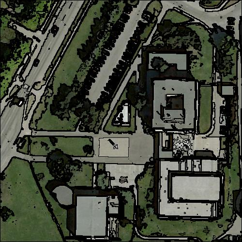

Region merging algorithms have proven to be an effective approach for image segmentation, especially for OBIA (Object-Based Image Analysis) in remote sensing. The basic approach of a region merging algorithm is to consider at the beginning every pixel of the image as an initial region. These regions are then merged iteratively to form the objects of the image. Region merging algorithms vary depending on the criteria used to decide whether two adjacent regions have to be merged and the heuristic to find for a region its adjacent region to be merged.
This section describes the common parameters of a region merging algorithm which have to be specified by the user when using the GRM library.
First, the user has to indicate the path to the image to segment. The following format are accepted with the otb library: (jpg, png, tif). The method SetInput(filename) of the generic class RegionMergingAlgorithm has to be called:
seg_.SetInput(inputFileName);
The proposed outputs of the GRM library are a label ouput image where each pixel belonging
to the same region are assigned the same label value and a color image where the contours of
the regions are represented.
seg_.SetOutputRGB(outputFileName); // image with the contours of the regions
seg_.SetOutputLabel(outputLabelFileName); // label image
Specific parameters to the region merging algorithm are needed:
seg_.SetParameters(params);
The declaration and initialization of the variable params is specific to a criterion
and will be described later.
As mentioned previously, two heuristics are proposed in the GRM library: LMBF
and BF.
By default, the merging process is using a combination of both heuristics. The first
70 iterations are done with the LMBF heuristic and then, if regions to
be merged remain, we switch with the BF heuristic until there are no merges
anymore.
The user has the possibility to change this configuration by tuning the number of iterations
when using the LMBF heuristic and by activating or desactivating the use of the
BF heuristic.
seg_.SetNumberOfIterations(30);
seg_.SetBestFitting(1);
In this example, we choose to process the 30 first iterations using the LMBF
and then we switch with the BF heuristic to achieve the segmentation.
seg_.SetNumberOfIterations(40);
seg_.SetBestFitting(0);
It is possible to use only the LMBF heuristic to process the segmentation by
passing an "infinite" number of iterations:
unsigned int max_iter = std::numeric_limits<unsigned int>max();
seg_.SetNumberOfIterations(max_iter);
Or to use only the BF heuristic:
seg_.SetNumberOfIterations(0);
seg_.SetBestFitting(1);
3 famous criteria have been implemented using the GRM library and are ready-to-use. This section describes their use.
This simple criterion is based on the Euclidean distance between spectral vector mean values of the regions. A maximum threshold limits the growth of the regions and determines the maximum value of the distance to merge the regions. A minimum threshold (usually equal to 0) determine the minimum value of the distance to merge the regions. The utility of this parameter will be seen for the scalable tile based framework using the GRM library in a future tutorial.
The source code for this example can be found in the file:
grm/src/Applications/EuclideanDistanceSegmentation.cxx
Let's look at the minimal code required to use this algorithm. First the following header defining the Euclidean distance algorithm class must be included:
#include "euc-dist-algorithm.h"
We use the OTB library to handle images.
We declare the image type based on a particular pixel type and dimension. In this case the
float type is used and the dimension of the image is obviously 2.
typedef otb::VectorImage<unsigned int, 2> ImageType;
Next, we declare the Euclidean distance region merging algorithm based on the image type
we have just declared.
typedef EuclideanDistanceRM<ImageType> SegmenterType;
We declare and construct the parameters specific to the Euclidean distance criterion.
The first parameter is the maximum threshold with type float and the second parameter
is the lowest threshold with type float.
EucDistParams params = {30, 0};
Then we construct our segmenter.
SegmenterType seg_;
We pass the common parameters described previously.
seg_.SetInput(inputFileName);
seg_.SetOutputRGB(outputFileName);
seg_.SetOutputLabel(outputLabelFileName);
seg_.SetParameters(params);
And finally we run the segmentation process.
seg_.Run();
Using the test image provided with the grm library in the directory img/,
we obtain the resulting image with the representation of the contours of the regions
| Input image | Output contour image |
|
|
 |
This criterion is based on spectral and spatial information. The spectral information is the euclidean distance between the spectral mean vectors and the spatial information is the length of the boundary between the two adjacent regions. The unique threshold is the lambda value that limits the growth of the regions.
The source code for this example can be found in the file:
grm/src/Applications/FLSASegmentation.cxx
Let's look at the minimal code required to use this algorithm. First the following header defining the Full Lambda Schedule algorithm class must be included:
#include "fls-algorithm.h"
We declare the image type based on a particular pixel type and dimension. In this case the
float type is used and the dimension of the image is obviously 2.
typedef otb::VectorImage<unsigned int, 2> ImageType;
Next, we declare the Full Lambda Schedule region merging algorithm based on the image type
we have just declared.
typedef FLSAlgorithmRM<ImageType> SegmenterType;
We declare and construct the parameters specific to the Full Lambda Schedule criterion.
The unique parameter is the lambda value with type float.
FLSParams params = 40;
Then we construct our segmenter.
SegmenterType seg_;
We pass the common parameters described previously.
seg_.SetInput(inputFileName);
seg_.SetOutputRGB(outputFileName);
seg_.SetOutputLabel(outputLabelFileName);
seg_.SetParameters(params);
And finally we run the segmentation process.
seg_.Run();
Using the test image provided with the grm library in the directory img/,
we obtain the resulting image with the representation of the contours of the regions